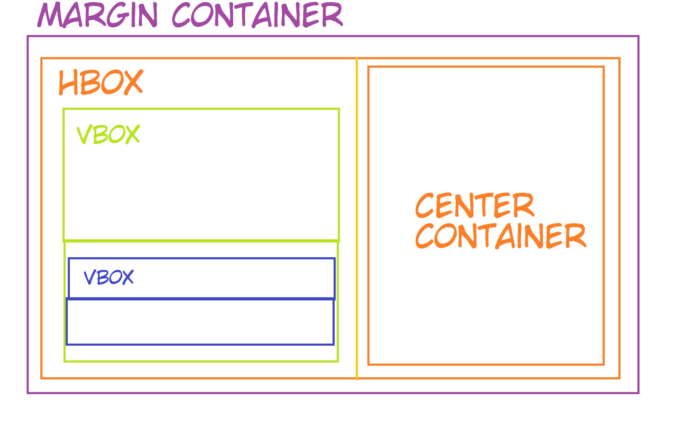
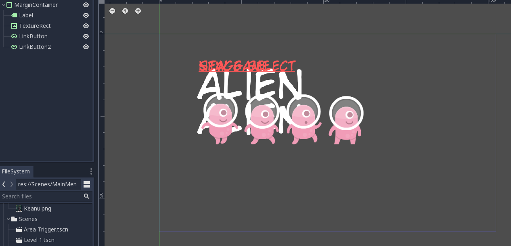
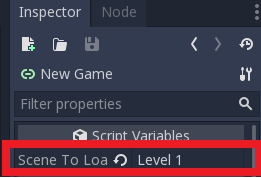
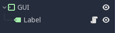

Tutorial 6 - Menu and In-Game Graphical User Interface
Selamat datang pada tutorial keenam kuliah Game Development. Pada tutorial kali ini, kamu akan mempelajari cara membuat menu screen, game over screen, dan in-game GUI.
Di akhir tutorial ini, diharapkan kamu paham cara menggunakan Container, Label, Button, serta unsur-unsur lain untuk menyusun menu dan antar muka dalam game.
Daftar Isi
Pengantar
Penting! Untuk tutorial kali ini, silakan menggunakan templat proyek yang telah disediakan di GitHub ATAU melanjutkan dari pengerjaan proyek Tutorial 4. Jika melanjutkan proyek Tutorial 4, silakan mengerjakan di repositori Git pengerjaan tutorial tersebut dan membuat branch baru (misal: branch
tutorial-6).
Tampilan Antar Muka
Saat kamu pertama kali memulai suatu game, apa yang pertama kali muncul? Splash screen dengan gambar logo perusahaan pembuat game tersebut?
Atau splash screen dengan ilustrasi tokoh dari game tersebut?

Pada umumnya, mayoritas game akan memiliki menu utama (main menu). Main menu adalah layar utama yang muncul pertama kali ketika mulai bermain game. Biasanya terdapat tombol atau instruksi untuk memulai permainan pada main menu.
Selain main menu, di dalam game juga terdapat tampilan antar muka yang menampilkan informasi terkait kondisi permainan sekarang secara visual. Tampilan antar muka tersebut dinamakan sebagai game GUI (Graphical User Interface). GUI digunakan untuk menampilkan banyak hal, seperti:
- Jumlah sumber daya (misal: darah tokoh, uang virtual) yang dimiliki pemain.
- Kondisi pemain relatif terhadap lawan-lawannya (misal: peringkat ketika balapan, posisi pemain pada dunia permainan).
- Pilihan untuk masuk ke menu lain terkait permainan (biasanya pada game mobile yang dapat merespon aksi tap/sentuh layar, misal: tombol untuk membuka daftar tokoh yang bisa dikendalikan pemain).
- Dan lain-lain.
Kemudian yang tidak kalah penting adalah tampilan saat pemain mencapai kondisi akhir permainan, seperti layar yang menampilkan kondisi menang atau kondisi kalah.
Pada Tutorial 4, kita sudah berhasil membuat game platformer 2D yang cukup dasar. Namun saat menjalankan proyek, scene yang dijalankan langsung level 1 dan tidak ada menu yang muncul terlebih dahulu.
Contoh Layar Menu Utama, Layar Kondisi Menang/Kalah, dan GUI
Berikut ini adalah beberapa contoh layar menu, layar kondisi akhir permainan, dan GUI pada beberapa game populer:


Tentu saja contoh-contoh di atas hanyalah representasi kecil dari sekian banyak contoh layar permainan. Apabila kamu ada contoh lain yang menarik, silakan cerita ketika sesi tutorial berlangsung. 😃
Pada tutorial ini kita akan melakukan hal berikut:
- Membuat layar menu utama (main menu)
- Membuat indikator nyawa (life counter)
- Membuat layar kalah (game over screen)
Latihan: Membuat Menu Utama
Visualisasi
Untuk menghasilkan sebuah UI yang baik, sebaiknya kita membuat sebuah mockup terlebih dahulu. Apa saja yang ingin kita tampilkan di menu utama, dan posisi segala hal yang ingin kita tampilkan. Visualisasi boleh digambar di kertas, dan tidak harus bagus-bagus. Cukup untuk memberikan gambaran kasar apa yang ingin kita buat.
Berikut adalah contoh visualisasi main menu:

Membuat Containers, Labels, dan Buttons
Salah satu cara untuk menyusun sebuah menu dengan rapi adalah menggunakan containers. Container pada konteks desain UI pada game merupakan elemen yang akan menampung komposisi elemen UI.
Jika kamu familiar dengan desain Web, anggaplah container serupa dengan tag <div> yang sering dipakai untuk membungkus elemen-elemen HTML pada sebuah halaman Web.
Container di Godot akan membungkus elemen-elemen UI pada permainan yang dikembangkan.
Beberapa container yang terdapat di engine Godot antara lain:
MarginContaineruntuk menyusun elemen dengan paddingHBoxContaineruntuk menyusun elemen secara horizontalVBoxContaineruntuk menyusun elemen secara vertikalCenterContaineruntuk menyusun elemen secara centered
Sesuai dengan visualisasi yang telah dilakukan di atas, kita dapat menyusun main menu ini dengan susunan container sebagai berikut:
Kotak terbesar seukuran game window, dan terdapat padding di bagian ujung window.
Oleh karena itu kita menggunakan parent MarginContainer.
Kemudian layar dibagi dua kiri kanan, maka menggunakan HBoxContainer.
Di bagian kiri ada judul dan button, maka ada VBoxContainer.
Button sendiri akan kita susun dengan VBoxContainer juga.
Sedangkan sebelah kanan cukup kita berikan CenterContainer untuk gambar.

Catatan: Kamu tidak harus mengikuti struktur dan layout persis sama seperti di atas. Bahkan diperbolehkan jika kamu tidak ingin menggunakan container sama sekali untuk menu utama. Namun container sangat membantu untuk visualisasi dan kerapihan.
Mulai dengan membuat scene baru. Karena root node UI yang kita inginkan adalah container paling luar,
atur root node menjadi sebuah MarginContainer.
Jangan lupa simpan (save) scene tersebut, berikan nama MainMenu.tscn.

Pada tab Inspector, atur Constants pada Theme Overrides sebagai berikut:

Kemudian pada Viewport, tekan menu Layout dan pilih opsi Full Rect. Ini dilakukan agar ukuran container menyesuai ukuran window.

Sekarang masukkan elemen teks dan gambar ke dalam MarginContainer.
Untuk teks, gunakan node Label, dan untuk gambar gunakan node TextureRect.
Untuk contoh ini ada dua tombol, "New Game" dan "Stage Select", yang akan diimplementasikan menggunakan node LinkButton.
Untuk menambahkan teks pada Label atau LinkButton cukup menulis di tab Inspector bagian Text.
Untuk menambahkan gambar kepada TextureRect, sama seperti menambahkan texture di Sprite yaitu di tab Inspector bagian Texture.
Saat selesai, mungkin struktur scene dan workspace kamu akan terlihat seperti screenshot berikut:

Mungkin kamu akan menyadari bahwa tulisan pada Label dan LinkButton terlihat sangat kecil.
Selain itu, tab Inspector tidak memiliki pilihan ukuran atau jenis font.
Hal ini disebabkan karena engine Godot versi 3.5 tidak memiliki fitur untuk mengubah ukuran dan jenis font secara langsung.
So, what do we do?
Latihan: Membuat Custom Fonts
Pada engine Godot, kita harus menggunakan custom font agar dapat mengatur font dan ukurannya pada sebuah tulisan di dalam sebuah node.
Misalnya pada node Label, kita harus menggunakan objek custom font.
Untuk tutorial ini, kita akan membuat DynamicFont menggunakan font dengan ekstensi .ttf.
Sudah disediakan beberapa berkas .ttf di folder assets/Fonts/Raw/ pada templat proyek Tutorial 6.
Catatan: Jika ingin mencari font sendiri, bisa melalui situs web font gratis seperti di sini.
Pertama, tekan tombol Create Resource pada tab Inspector.
Kemudian buat sebuah DynamicFont, seperti yang tergambarkan pada screenshot berikut:


Masih pada tab Inspector, cari pilihan Font Data, lalu tekan Load dan cari berkas .ttf yang ingin digunakan.
Setelah itu, kamu dapat mengatur size sesuka hati pada opsi Size Tekan Save,
dan simpan sebagai berkas .tres di folder assets/Fonts pengerjaan Tutorial 6.

Untuk menggunakan font tersebut, cari opsi Custom Font di tab Inspector pada node Label atau LinkButton, lalu Load Resource yang baru saja dibuat.
Catatan: Seperti yang telah dijelaskan sebelumnya, tidak ada cara mengatur ukuran dan jenis font secara langsung di engine Godot versi 3. Jika ingin membuat font dengan tipe atau ukuran yang berbeda, harus membuat
DynamicFontyang berbeda.
Setelah menggunakan DynamicFont pada judul dan tombol, hasilnya terlihat seperti screenshot berikut.
Tombol New Game dan Stage Select diberi warna merah menggunakan Custom Colors pada tab Inspector:

Masih belum terlihat rapi. Sekarang tambahkan container sesuai visualisasi di atas tadi. Struktur node dan workspace seharusnya akan terlihat lebih rapi dan menyerupai screenshot berikut:

Agar judul dan tombol tidak terlalu berhimpitan, ubah Margin pada VBoxContainer parent.
Kemudian, ubah Alignment , pilih opsi Expand pada vertical di Size Flags.
Lalu atur Separation pada Theme Overrides --> Constants.


Selamat! Layar menu utama kamu sudah terlihat cukup rapi!

Tapi masih belum clickable tentunya. Bagaimana caranya agar saat kita menekan tombol "New Game" dia akan melempar kita ke level 1?
Latihan: Clickable Menu
Kita ingin agar saat tombol "New Game" ditekan, game akan menjalankan scene level pertama.
Pada Tutorial 4, kita sudah belajar menggunakan Signal.
Sekarang kita akan menggunakannya lagi untuk menangani event handler ketika ada aksi menekan tombol, yaitu pressed().
Gunakan cuplikan script__ berikut sebagai _script yang ditempelkan pada LinkButton:
1 2 3 4 5 6 | |
Kemudian pastikan LinkButton sedang dipilih dan lihat tab Inspector.
Isi variabel scene_to_load pada tab Inspector dengan value "Level 1"

Berhasil! Sekarang tombol "New Game" kamu akan langsung membawa pemain ke level 1.

"Mengapa saat saya tekan play (F5) yang jalan pertama bukan main menu?"
Karena MainMenu.tscn belum diatur sebagai Main Scene.
Main Scene dapat diubah di Project Settings -> Application -> Run -> Main Scene.

Latihan: Membuat GUI Life Counter
Sebelumnya kita sudah membuat kondisi dimana saat player jatuh, maka scene akan di-reload dengan player kembali ke tempat semula. Namun tidak ada penalti sama sekali untuk jatuh. Sekarang kita akan mencoba membuat kondisi dimana setiap kali player jatuh, player akan kehilangan satu nyawa. Saat sudah tidak ada nyawa lagi, maka permainan usai (game over).
Global Variables
Jika kamu pernah menyentuh bahasa pemrograman apapun, pasti sudah familiar dengan yang namanya global variable. Global Variable adalah sebuah variabel yang terlihat (visible) oleh seluruh program. Kita menggunakan global variable untuk mendefinisikan nyawa player. Nyawa player akan disimpan permanen (persist) walaupun scene baru dipanggil atau diulang-ulang. Variabel ini dapat dipanggil dari script manapun.
Pertama, klik kanan folder scripts lalu tekan New Script:

Beri nama berkas script tersebut global.gd lalu isi dengan script berikut:
1 2 3 | |
Pada Project Settings, cari tab Autoload, lalu tambahkan script global.gd (tekan icon folder di sebelah tulisan Node Name lalu cari berkas script-nya).
Setelah ditambahkan, akan muncul di dalam daftar. Pastikan kolom Singleton dalam kondisi aktif (enabled).

Sekarang kita punya variable nyawa yang dapat diakses kapan saja. Mari kita tampilkan menggunakan label.
Catatan: Bagi yang penasaran mengapa menggunakan global variable untuk contoh ini, alasannya karena tiap kali reload scene, player juga ikut reload. Maka
livesdisimpan dalam global variable agar tidak reset saat scene reload.
GUI Scene
Buat sebuah scene baru dan beri nama Life Counter.tscn dengan root node sebuah MarginContainer.
Buat sebuah child node Label, lalu berikan script.
Jangan lupa berikan custom font kepada node Label.
1 2 3 4 | |
Struktur akan terlihat seperti ini (MarginContainer telah di-rename menjadi "GUI"):

Pada Level 1.tscn, tambahkan sebuah CanvasLayer node sebagai child node dari node utama.
CanvasLayer merupakan node yang membuat sebuah layer 2D tersendiri untuk seluruh child-nya.
CanvasLayer berguna untuk membuat background untuk level, atau user interface seperti yang akan kita buat sekarang.
Tambahkan Life Counter.tscn yang tadi kita buat sebagai child node dari CanvasLayer.
Struktur Level 1.tscn akan terlihat seperti screenshot berikut:

Coba jalankan Level 1.tscn kamu.
Sekarang sudah muncul tampilan life counter di kiri atas yang mengikuti bentuk window yang ada.

Namun nyawa player belum berkurang ketika pemain mati. Waktunya melakukan sedikit scripting!
Ubah script di Area Trigger.gd dengan kode berikut:
1 2 3 4 5 6 7 8 9 10 11 12 13 | |
What's happening above? Karena transisi dari level 1 ke 2 menggunakan fungsi yang sama, pertama kita periksa terlebih dahulu scene yang memanggil fungsi apakah sama dengan target scene (maka reload). Jika iya, nyawa berkurang satu. Baris
passdi kondisiglobal.lives == 0akan kita isi sebentar lagi. (you could probably already guess what goes there though).

Sekarang nyawa player berkurang saat mati. Namun kita belum memasukkan kondisi dimana nyawa player 0, yaitu game over.
Latihan: Membuat Layar Game Over
Untuk membuat layar game over, langkah-langkahnya sama dengan membuat layar menu utama.
Visualisasi layar game over di contoh tutorial ini berupa tulisan GAME OVER dengan warna latar merah.
Jika ingin menambahkan warna latar, kita dapat menggunakan node ColorRect.
Buatlah sebuah scene baru dan beri nama Game Over.tscn, lalu atur sebuah ColorRect sebagai root node di scene tersebut.
Mirip seperti MarginContainer sebelumnya, pilih menu Layout pada viewport dan pilih Full Rect agar kotak mengikuti ukuran window.
Silakan ubah warna sesuka hati.

Tambahkan label bertuliskan "GAME OVER", dengan DynamicFont yang menurut kamu cocok, kemudian atur posisinya.
Selesailah Game Over screen kita!

Sekarang bagaimana caranya agar saat nyawa pemain 0 akan menampilkan layar ini? Pada Area Trigger.gd ubah baris pass menjadi:
1 | |
Berhasil! Sekarang saat player nyawanya habis, layar game over akan muncul.

Selamat, tutorial ini sudah selesai!
Latihan Mandiri: Fitur Tambahan
Silakan baca referensi yang tersedia untuk membantu pengerjaan latihan mandiri. Di akhir tutorial, kamu diharapkan untuk mengerjakan minimal 2 (dua) dari beberapa contoh fitur tambahan berikut:
- Tombol pada layar game over untuk kembali ke menu utama.
- Fitur Select Stage (yang konon sudah ada button-nya di main menu namun tidak dihiraukan).
- Layar dan efek transisi antar level, dari level 1 ke level 2.
- Dan lain-lain (bebas), selama fitur tersebut melibatkan implementasi menu dan GUI di dalam game. Get creative!
Jangan lupa untuk menjelaskan proses pengerjaan tutorial ini di dalam berkas README.md.
Jika kamu melanjutkan Tutorial 4, silakan tambahkan subbab (section) baru di berkas README.md yang berisi penjelasan proses pengerjaan Tutorial 6.
Cantumkan juga referensi-referensi yang digunakan sebagai acuan ketika menjelaskan proses implementasi.
Skema Penilaian
Pada tutorial ini, ada empat kriteria nilai yang bisa diperoleh:
- 4 (A) apabila kamu mengerjakan tutorial dan latihan melebihi dari ekspektasi tim pengajar. Nilai ini dapat dicapai apabila mengerjakan seluruh Latihan dan 2 (dua) fitur tambahan yang merupakan bagian dari Latihan Mandiri, ditambah dengan memoles (polishing) lebih lanjut permainannya.
- 3 (B) apabila kamu hanya mengerjakan tutorial dan latihan sesuai dengan instruksi. Nilai ini dapat dicapai apabila mengerjakan seluruh Latihan dan 2 (dua) fitur tambahan yang merupakan bagian dari Latihan Mandiri.
- 2 (C) apabila kamu hanya mengerjakan tutorial hingga tuntas. Nilai ini dapat dicapai apabila mengerjakan seluruh Latihan namun tidak mengerjakan Latihan Mandiri.
- 1 (D) apabila kamu hanya sekedar memulai tutorial dan belum tuntas. Nilai ini dapat dicapai apabila belum tuntas mengerjakan Latihan.
- 0 (E) apabila kamu tidak mengerjakan apapun atau tidak mengumpulkan.
Pengumpulan
Kumpulkan semua berkas pengerjaan tutorial dan latihan ke repositori Git. Kemudian, push riwayat commit-nya ke repositori Git pengerjaan Tutorial 6. Ingat kembali instruksi di awal Tutorial 6, kamu dapat memilih membuat repositori baru khusus untuk pengerjaan Tutorial 6 atau menggunakan repositori Tutorial 4 sebagai templat untuk mengerjakan Tutorial 6. Jika melanjutkan Tutorial 4, jangan lupa untuk mengambil aset yang dibutuhkan dari templat proyek Tutorial 6.
Apabila kamu mengerjakan latihan mandiri, pastikan scene dan node yang kamu buat dan ubah telah tercatat masuk ke dalam repositori Git. Kumpulkan tautan ke repositori Git hasil pengerjaan Tutorial 6 kamu di slot pengumpulan yang tersedia di SCELE.
Tenggat waktu pengumpulan adalah Rabu, 17 April 2024, pukul 21:00.
Referensi
- Main Menu
- GUI Design
- Kenney Assets
- Materi tutorial pengenalan Godot Engine, kuliah Game Development semester gasal 2020/2021 Fakultas Ilmu Komputer Universitas Indonesia.
Selingan Menarik (Intermezzo)
Berikut ini adalah gambar meme yang diambil dari sebuah thread di Reddit:

Gambar tersebut menampilkan screenshot dari sebuah game yang diubah sehingga mengandung elemen-elemen GUI dari banyak game lain. Apa saja judul game yang bisa kamu kenali dari elemen GUI-nya pada meme tersebut? Jika kamu mengenali satu atau lebih elemen GUI di screenshot tersebut, apa fungsi elemen GUI tersebut di game aslinya?
Silakan didiskusikan dengan rekan-rekan sekelas ketika membahas materi mengenai Interface pada game, atau dijadikan bahan obrolan santai di grup pertemanan masing-masing.
Created: 2024-04-04 00:49:48